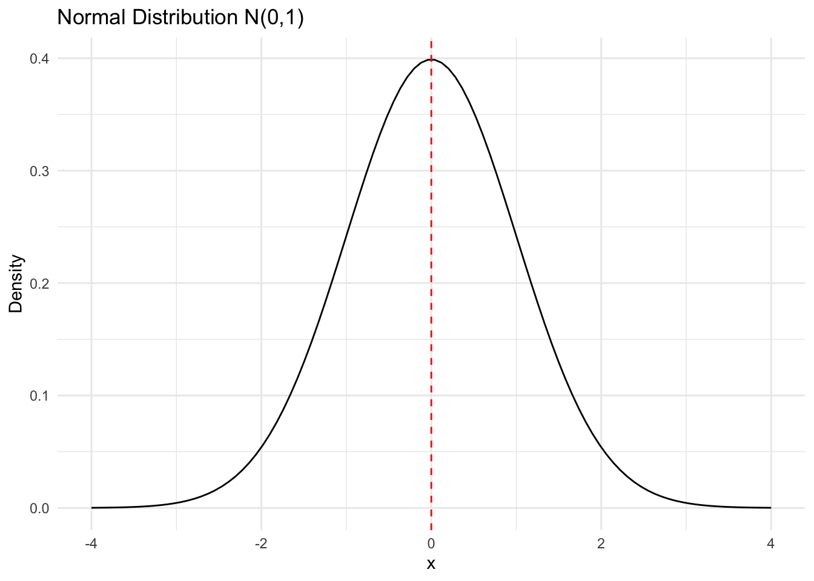

4 Random Variables
Learning Objectives
- Distinguish between discrete and continuous random variables
- Define random variables for real-world data problems
- Identify appropriate probability distributions for common data types
- Connect random variables to data columns used in SAS programs to represent a real world question
4.1 What Is a Random Variable?
A random variable (RV) is a numerical quantity whose value depends on the outcome of a random experiment.
We typically denote a random variable by an uppercase letter, such as \(X\) and its realized value by a lowercase letter, such as \(X = x\). The random variable can be continuous or discrete.
In practice, we often observe multiple realizations, or running the random experiment multiple times, say \(n\) times or \(n\) realizations. We denote these realizations as: \[X_1 = x_1, \; X_2 = x_2, \; \ldots, \; X_n = x_n.\] The number \(n\) is called the sample size.
Define whether the following random variables are discrete or continuous, and the possible values that \(X\) takes.
- Number of emails received by a server in one hour (\(X = 0, 1, 2, \ldots\): discrete)
- Time (in minutes) until a machine fails (\(X = x \in [0, \infty)\): continuous)
- Total number of defects on a manufactured item (\(X = 0, 1, 2, \ldots\): discrete)
- Daily maximum temperature in Atlanta (in degrees Fahrenheit) (\(X = x \in (-\infty, \infty)\): continuous)
- Whether a randomly selected loan defaults within one year (\(X = 1 \text{ if default, } 0 \text{ otherwise}\): discrete)
Define whether the following random variables are discrete or continuous, and the possible values that \(X\) takes.
- Number of transactions made by a customer in a day
- Response time (in seconds) of a web service request
- Count of hospital admissions in a city per week discrete)
- Proportion of time a system is idle during a day
4.2 Discrete vs Continuous Random Variables
4.2.1 Discrete Random Variables
A discrete random variable takes values in a finite or countable set.
Examples:
- Number of heads in three coin flips
- Number of students passing an exam
- Number of events occurring in a fixed time period
A discrete random variable is described by a probability mass function (PMF):
| Value of \(X\) | \(x_1\) | \(x_2\) | \(x_3\) | … | \(x_m\) |
|---|---|---|---|---|---|
| Probability | \(p_1\) | \(p_2\) | \(p_3\) | … | \(p_m\) |
These probabilities satisfy:
- \(0 \le p_i \le 1\),
- \(\sum_{i=1}^m p_i = 1\).
We calculate the probability of events modelled by discrete random variables by summing up the probability \(p_i\) for the values \(x_i\) that make up the event.
Suppose the length \(X\) (in minutes) of an international phone call has distribution:
| X | 1 | 2 | 3 | 4 |
|---|---|---|---|---|
| P(X) | 0.2 | 0.5 | 0.2 | 0.1 |
Then, calculate the following probabilities
- \(P(X \le 2)\)
- \(P(X < 2)\)
- \(P(X > 1)\)
4.3 Common Discrete Distributions
4.3.1 Bernoulli Distribution
Used for binary outcomes:
- success / failure
- yes / no
- 1 / 0
Notation: \(X \sim \text{Ber}(p)\), where \(p\) is the probability of success.
Example:
Whether a patient has diabetes (1 = yes, 0 = no).
How to specify the probability \(p\) will be discussed in the following lecture. This is related to the procedure of statistical inference.
4.3.2 Poisson Distribution
Used to model counts of events over time or space.
Notation: \(X \sim \text{Poi}(\lambda)\)
where \(\lambda\) is the mean rate.
Examples:
- Number of trades per day
- Number of system failures per week
- Number of arrivals to a service queue
Similar to the probability \(p\) from the Bernoulli distribution, how to specify the rate \(\lambda\) will be discussed in the following lecture.
4.4 Continuous Random Variables
A continuous random variable can take any value \(x\) in an interval.
Examples:
- Height of individuals
- Time until failure of a component
- Test scores treated as continuous
Probabilities are defined using density functions, not point probabilities. Some common continuous distributions are as follows.
4.4.1 Normal Distribution
The normal distribution is also called the Gaussian distribution. It is characterized by two parameters: the mean \(\mu\) and the standard deviation \(\sigma\). It is unimodal and symmetric around the mean which is the centre of the mass. A continuous random variable \(X\) that has a normal distribution is said to be normal or normally distributed.
Notation: \(X \sim N(\mu, \sigma^2)\). Sometimes the standard deviation may be used instead of the variance, which is the square of the variance.
Institution of the normal distribution:
- mean: \(\mu\)
- variance: \(\sigma^2\)
A distribution plot of the normal distribution with mean 0 and standard deviation 1 is shown above. It is often referred as the standard normal distribution. In practice, we would like to “standardized” the data to have mean 0 and standard deviation 1 for the subsequent analysis.
Normal distribution play an important role in statistical inference. One of the important property is the 68-95-99.7 rule: - About 68% of the data falls within one standard deviation of the mean - About 95% of the data falls within two standard deviations of the mean - About 99.7% of the data falls within three standard deviations of the mean

4.4.2 Exponential Distribution
The exponential distribution is another common distribution where a few outcomes are most likely with a rapidly decreasing probability for larger values. It is often used to model waiting times or lifetimes of objects. It is similar to the geometric distribution in the discrete case.
Two ways to specify the parameter.
- \(X \sim \text{Exp}(\lambda)\), where \(\lambda\) is the rate parameter.
- \(X \sim \text{Exp}(\beta)\), where \(\beta\) is the scale parameter, and \(\beta = 1/\lambda\).
The notation is either \(X \sim \text{Exp}(\lambda)\) or \(X \sim \text{Exp}(\beta)\). But to be sure which parameterization is used, we need to check the definition of the distribution.
Please define adequate random variables for the following data example, and thaink about what distribution can be used to model the data.
- Suppose we want to know whether the rate of diabetes of a certain area is too high. The researchers randomly discuss with 10 individuals in a certain area to know whether they have diabetes. The data are collected as “yes” or “no” answers as follows
| Individual | 1 | 2 | 3 | 4 | 5 | 6 | 7 | 8 | 9 | 10 |
|---|---|---|---|---|---|---|---|---|---|---|
| Outcome | 1 | 0 | 0 | 0 | 0 | 1 | 0 | 0 | 0 | 0 |
- A comapny that manufactures light blulb claims that a particular type of light bulb will last 850 hours on average. To justify the claim more scientifically, a researcher randomly selects 10 light bulbs of that type and measures the lifetimes (in hours) of the light bulbs as follows:
| Light Bulb | 1 | 2 | 3 | 4 | 5 | 6 | 7 | 8 |
|---|---|---|---|---|---|---|---|---|
| 831 | 832 | 840 | 819 | 822 | 836 | 829 | 817 |
In the following classes we will assume the dataset we have can be well-modelled represented for the underline studies. The data collection, however, is beyond the scope of the class. For those interested in data collection, please refer to the survey sampling or experimental design area.
4.5 Solution to the exercise
Answer of the exercise
Exercise 1
- Number of transactions made by a customer in a day (\(X = 0, 1, 2, \ldots\): discrete)
- Response time (in seconds) of a web service request (\(X = x > 0\): continuous)
- Count of hospital admissions in a city per week (\(X = 0, 1, 2, \ldots\): discrete)
- Proportion of time a system is idle during a day (\(X = x \in [0,1]\): continuous)
Exercise 2:
- \(P(X \le 2) = 0.7\)
- \(P(X < 2) = 0.2\)
- \(P(X > 1) = 0.8\)